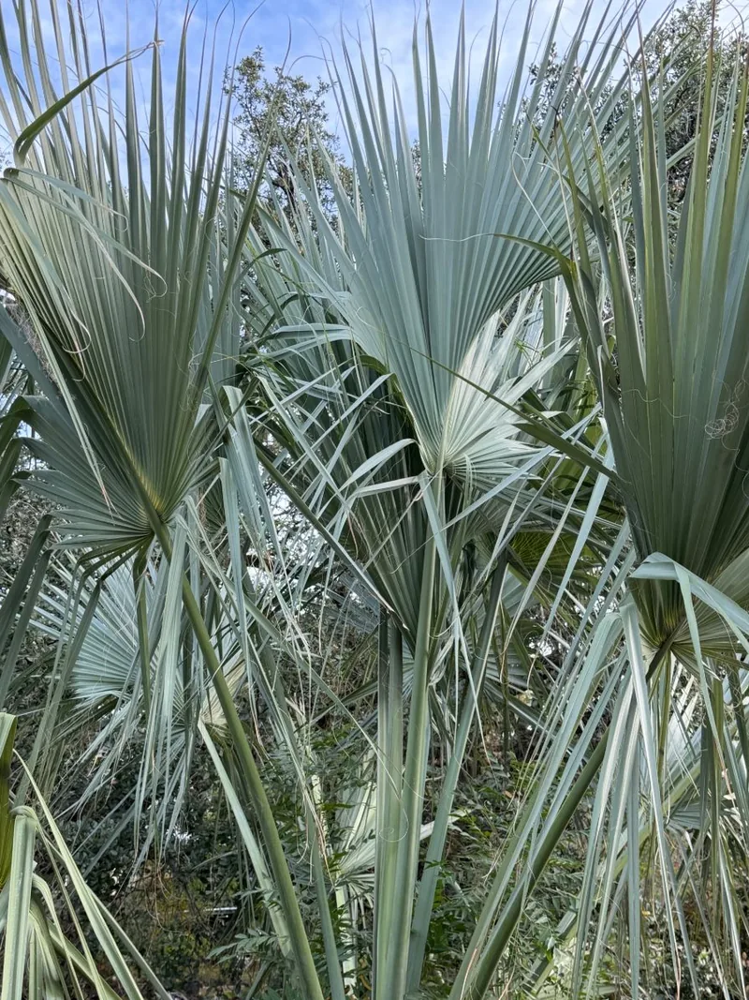
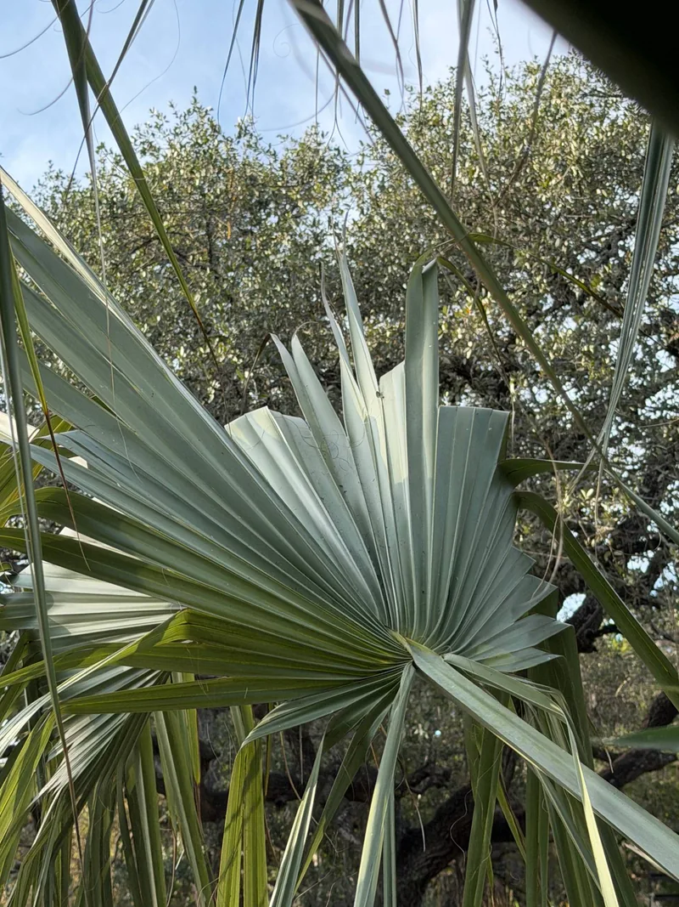
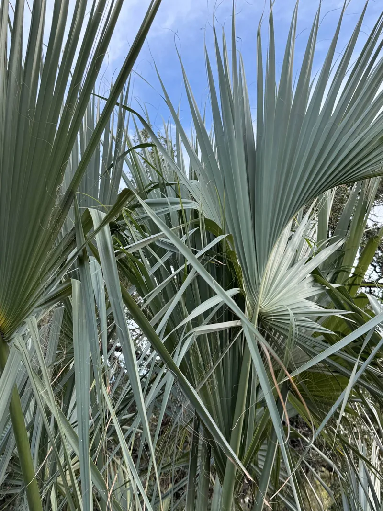

Sabal uresana, the blue Sonoran palm or Sonoran palmetto, is a large, slow-growing fan palm from northwestern Mexico with blue-gray leaves, a smooth leaf stalk, and a record of coming through hard freezes in Texas, Arizona, and North Carolina. It grows wild in the foothills, valleys, and canyons of Sonora and southwestern Chihuahua, from sea level to about 4,900 feet. This guide gathers what the botanical monographs, university extension offices, botanic gardens, and growers have recorded about it, next to our own photos, taken in South Austin. Red Agave’s owner has six of these palms planted at home. Every fact is tied to a named source, and the sources are listed at the end.


What Are the Key Facts About the Blue Sonoran Palm?
| Fact | What the sources record |
|---|---|
| Botanical name | Sabal uresana Trel., published in 1901 |
| Family | Arecaceae, the palm family |
| English names | Sonoran palmetto, Sonora palmetto, blue Sonoran palmetto, blue Sonoran palm |
| Names in Mexico | Palma, palma blanca, palma real, palma de sombrero, taco |
| Native range | Sonora and southwestern Chihuahua, Mexico, with reports from northern Sinaloa |
| Elevation | Sea level to 4,900 ft (1,500 m) |
| Height | Often 16 to 50 ft in the wild, and up to about 65 ft |
| Trunk | Single, 10 to 16 in. thick |
| Leaf | A blue-green fan on a smooth stalk, up to 14 ft long with the stalk |
| Flowers | Creamy white, April to June |
| Fruit | Brown to black, 1/2 to 7/8 in. across, ripe August to October |
| Growth rate | Slow |
| Light | Full sun |
| Water | Low to medium |
| Cold rating | USDA zone 8 |
| Conservation status | Least Concern (IUCN Red List, assessed 2022) |
What Is the Blue Sonoran Palm?
A palmetto. It belongs to Sabal, the genus that also holds the cabbage palm of Florida and the Texas sabal. In his 1990 monograph of the genus, the botanist Scott Zona recognized 15 species of Sabal.
Three of them form their own branch in western Mexico. Sabal uresana is the northern one. To the south it is replaced by Sabal rosei in Sinaloa, and farther south by Sabal pumos in the Balsas River basin. Zona found these three to be each other’s closest relatives.
Richard Felger and Elaine Joyal described every palm of Sonora in 1999. They call Sabal uresana the most widespread palm in the state, one of six native species there, and they note that its plants and fruits are among the largest of any Sabal.
It is not the Mexican blue palm. That name belongs to Brahea armata, a palm from a different genus. The section on identification shows how to tell them apart.
Where Does the Name Come From?
From a town. The botanist William Trelease collected the first scientific specimen on August 17, 1900, in the uplands a few miles north of Ures, Sonora. He published the name Sabal uresana in the Annual Report of the Missouri Botanical Garden in 1901, and the specimen is in the garden’s herbarium. The University of Arizona Campus Arboretum notes that the palm is common around Ures.
In the same year, O. F. Cook moved it to a new genus as Inodes uresana. Zona’s monograph treats Inodes as part of Sabal, and the palm has kept the name Trelease gave it.
In Sonora most people call it palma. Felger and Joyal recorded more names, by region and by the age of the plant:
- Palma real and palma grande: around Álamos
- Palma del suelo: palm of the ground, a young plant with no trunk yet
- Palma del taco, or taco: a fruiting adult
- Palma blanca and palma de sombrero: white palm and hat palm, recorded by Zona
- Indigenous names: it has its own names in the languages of the Guarijío, Mayo, Mountain Pima, Pima Bajo, and Seri peoples
Where Does It Grow Wild?
In northwestern Mexico, and almost nowhere else. Felger and Joyal write that it scarcely extends beyond Sonora. It grows in west-central and eastern Sonora and in southwestern Chihuahua, and botanists have reported it from northern Sinaloa. The IUCN Red List gives its range as Sonora and Chihuahua.
It is a palm of dry country that keeps to deep soil and low ground.
- Vegetation: Sonoran desert scrub, thornscrub, tropical deciduous forest, and the lower edge of oak woodland
- On the coast: scattered groves from Bahía San Carlos north to Bahía San Pedro, mostly along canyon bottoms, and sometimes on dunes and upper beaches
- Inland: sandy plains, low hills, floodplains, and canyon bottoms, and seldom on rocky slopes
- Soil: mostly deep, and gravelly to sandy or silty
- Elevation: near sea level to about 4,000 ft (1,220 m) in Sonora. Zona gives sea level to 4,900 ft (1,500 m), with most populations above 2,100 ft (650 m).
- Neighbors: in the canyon oases north of Guaymas it grows with two other palms, Brahea elegans and Washingtonia robusta
Zona places it along watercourses and valleys, in thorn forest and oak forest, in the foothills of the Sierra Madre Occidental.
The palm changes across its range. Felger and Joyal found the largest plants and the largest fruits in the northern populations, and the smallest fruits near Ures and along the coast.
How Do You Identify It?
By the leaf stalk and by the fold in the fan.
- One trunk: a single trunk, with no offshoots at the base
- A fan with a rib: the leaf is costapalmate. The stalk runs on into the blade as a rib, so the fan folds along it and arches instead of lying flat.
- A smooth stalk: no teeth and no spines. The Arizona-Sonora Desert Museum treats the smooth stalk, running well into a bluish blade, as a key character of this palm.
- Blue-gray color: Zona describes the leaves as moderately to highly glaucous, most of all on the underside
- Threads: coarse fibers often hang between the leaf segments. In our photos they curl off the leaf tips.
- A pointed tab: where the stalk meets the blade there is a narrow triangular tab, the hastula, 2 to 7 inches long
- Arching flower stalks: they spread and arch without drooping, and they are shorter than the leaves or about as long
- Fruit: a slightly flattened globe, brown to black, from half an inch to nearly an inch across
The numbers are large. Zona counted 15 to 35 leaves in a crown and 60 to 75 segments in a leaf, joined for about a third of their length. Felger and Joyal measured leaves up to 14 feet long with the stalk: a stalk of 2.5 to 8.5 feet, and a blade of 3 to 6 feet.

Blue Sonoran palm or Mexican blue palm? Check the leaf stalk and the flowers. In Felger and Joyal’s key to the palms of Sonora, Sabal always has a smooth-edged stalk, a strongly costapalmate leaf, and flower stalks no longer than the leaves. Brahea stalks are smooth or toothed, the leaves are not costapalmate or only moderately so, and the flower stalks are often longer than the leaves. The University of Arizona Extension gives the Mexican blue palm flower stalks 18 feet or more in length.
Blue Sonoran palm or another palmetto? Check the color. Zona’s key separates it from a close relative, Sabal rosei, by leaves that are glaucous instead of evenly green.


Why Are the Leaves Blue?
Botanists call the color glaucous: a pale blue-gray bloom over the green. On this palm it comes with a leaf built for dry air.
Zona cut and measured the leaves of 15 Sabal species under the microscope. Sabal uresana had the thickest leaf blade of them all, about half a millimeter. It also had the thickest cuticle, which is the outer skin of the leaf, and the most deeply sunken stomata, which are the pores a leaf breathes through. Zona reads both as adaptations to a dry habitat.
Felger and Joyal see the same pattern across the palms of the Southwest. The species that face drought and winter freezes have thicker trunks and larger, tougher, duller, more reflective leaves.
Not every blue Sonoran palm is equally blue. Two things change the color.
- Seed source: the John Fairey Garden in Hempstead, Texas describes its own palms as icy blue, and notes that many other seed sources produce much greener offspring. Plant Delights Nursery describes a green-leaved form from 3,000 feet in the Sierra Madre Occidental. Cistus Nursery grows a steel-blue form collected in western Sonora.
- Age: the University of Arizona Extension notes that young plants are the bluest, and that the blue becomes less prominent as the palm matures
So choose the palm, not the label. Look at the plant you are buying, in daylight.

How Big Does It Get?
Big. The sources give different numbers because they measure different things: wild palms in Sonora, and planted palms in gardens.
| Source | Height | Other measurements |
|---|---|---|
| Zona, monograph of Sabal (1990) | To about 65 ft (20 m) | Trunk 12 to 16 in. thick, 15 to 35 leaves |
| Felger and Joyal, palms of Sonora (1999) | Often 16 to 50 ft (5 to 15 m) | Trunk often 10 to 14 in. thick, leaves to 14 ft |
| Arizona-Sonora Desert Museum | Up to 50 ft (15 m) | |
| University of Arizona Extension | 30 to 40 ft | Crown 15 to 25 ft wide, trunk 2 to 3 ft wide |
| University of Arizona Campus Arboretum | 20 to 50 ft | Crown 16 to 20 ft wide |
| John Fairey Garden, Hempstead, TX | 20 to 30 ft | Canopy up to 10 ft wide |
| Plant Delights Nursery, Raleigh, NC | 30 ft |
Plan for the width as much as the height. A crown 15 to 25 feet across needs open sky around it.
How Fast Does It Grow?
Slowly, and for a reason you cannot see.
Every source agrees on slow. The University of Arizona Extension lists its growth rate as slow. The Campus Arboretum calls it slow growing and long lived. Cistus Nursery, in Portland, Oregon, reports a plant that reached about 4.5 feet in five years, and adds that it grows faster in very hot climates. Plant Delights Nursery writes that a 30-foot tree is something for your grandchildren’s lifetime.
The reason is underground. Zona explains that in Sabal the stem begins below the soil. The seedling drives its growing point downward, and a trunk does not rise above the ground until after many years of growth below it. Felger and Joyal add that the plants quickly develop deep roots.
That is the stage in our photos: fans on long stalks, and no trunk in view. In Sonora a palm at this stage has its own name, palma del suelo, the palm of the ground.
Slow has two upsides. The palm keeps its scale for years, and it lives a long time. The University of Arizona’s campus plant walk still lists a Sonoran palmetto planted by the desert ecologist Forrest Shreve before 1940.
It is also faster than its rival. The Campus Arboretum notes that it grows faster than the Mexican blue palm.
How Cold Hardy Is It?
Hardy enough to come through the February 2021 freeze with no damage in a Texas garden. The John Fairey Garden in Hempstead reports that its blue Sonoran palmettos took "exactly zero damage" that winter.
| Where | What was recorded | Source |
|---|---|---|
| Hempstead, Texas | No damage in the February 2021 freeze | John Fairey Garden |
| Raleigh, North Carolina | One unprotected plant, unhurt in the winter of 2000 to 2001: a low of 9°F, and about three weeks barely above freezing | Plant Delights Nursery, at Juniper Level Botanic Garden |
| Tucson, Arizona | Not damaged by freezing temperatures | Felger and Joyal (1999) |
| Southeast Arizona | A blue form from western Sonora, sold as Sabal aff. uresana, frost hardy to 0°F so far | Cistus Nursery |
The ratings line up with the records.
- John Fairey Garden: USDA zone 8
- Cistus Nursery: USDA zone 8
- Plant Delights Nursery: zones 8a to 10b, at least
- University of Arizona Campus Arboretum: rated for zone 9a, and reported to take severe frost, which would suit zone 8a
- University of Arizona Extension: very cold hardy once established
Here is what that means in Austin. The USDA’s 2023 map puts most of the Austin area in zone 9a, where the coldest night of an average winter falls between 20 and 25°F. Zone 8 covers 10 to 20°F. Camp Mabry reached 15°F in December 2022 and fell into the single digits in February 2021. A palm rated for zone 8 is rated below Austin’s average winter, and the Hempstead and Raleigh records speak to the hard ones.
Three limits belong next to those records.
- Size: the Extension notes that palms are most sensitive to cold as small plants, and its rating for this palm applies once it is established
- One garden is one garden: the 2021 result is the John Fairey Garden’s report on its own palms. A different site, soil, or seed source can give a different result.
- Leaves first: on any palm, cold shows first on the lower and outer leaves. The Extension’s advice is to remove damaged fronds in spring, and it warns that over-pruned palms are the vulnerable ones.
See our guide to freeze protection for plants in Austin.
What Does It Need in Austin?
Sun, drainage, and deep water now and then.
- Sun: full sun. The Extension and the John Fairey Garden both list it. Cistus and Plant Delights list part sun as well.
- Drainage: the Extension states that well-drained soil is necessary for best growth
- Soil: the Campus Arboretum lists very well-drained soils, from dry and sandy to richer and moist, at a pH of 6.0 to 8.0
- Water: low to medium by the Extension, low by the Campus Arboretum, and drought tolerant by the John Fairey Garden
- Heat and wind: the Campus Arboretum notes that it takes hot inland sites, full sun, and drying winds
- Deer: the John Fairey Garden and Plant Delights both list it as deer resistant
Austin’s native soils are typically alkaline, which sits inside that pH range. Drainage is the part to solve. See our guides to alkaline soil and caliche.
Low water is not no water. In the wild this palm follows valley floors and canyon bottoms, on deep soil. The Extension makes the point about desert palms in general: native palms grow at oases, and deep watering on a regular schedule keeps a landscape palm healthy. For established palms of most species it suggests a slow soak to a depth of 2 feet every couple of weeks in summer, and every four to six weeks in winter. That schedule was written for the Arizona desert, so in Austin treat it as the most a palm needs, and let the soil dry between soaks. Cistus adds that extra water in hot weather speeds this palm’s growth.
Keep it out of the lawn sprinklers. The Extension warns that sprinkler spray on a palm can lead to rot in the bud and a crust of salts on the trunk and leaves, and that mower and string-trimmer wounds on a palm trunk are permanent. Give the palm its own bed and its own watering schedule.
Feed it after the first summer. The Extension recommends a palm fertilizer with about three times as much nitrogen and potassium as phosphorus, plus magnesium and micronutrients, spread under the canopy in mid spring and again in early summer.
How Do You Plant It?
Once, young, and in the warm season. These steps come from the University of Arizona Extension’s guide to landscape palms.
- When: in warm weather, with the soil above 65°F. That is April through September, and best in late spring to early summer.
- Test the drainage first: fill the hole with water, let it drain, and fill it again. If the second filling has not drained within 24 hours, fix the drainage before you plant.
- The hole: as deep as the root ball, and 2 feet wider on each side
- Depth: set the crown at its original soil level. Never bury the crown or the young trunk.
- Backfill: native soil. Do not amend it with manure or organic matter, because the palm sinks as that material breaks down.
- First weeks: water thoroughly at planting, then keep the root ball moist and never soggy. In warm weather that is daily for about two weeks, stretching to weekly through the first growing season.
- Mulch: 2 to 4 inches over the watered area
Do not plan on moving it. Felger and Joyal report that these palms seldom survive bare-root transplanting, and that they are not suited to container growing, because they quickly develop deep roots. The Campus Arboretum notes that young plants are grown in tubs and planter boxes. Put the two together: a container is a start, not a home. Buy the palm container-grown, set it in its final place, and leave it there.
Give it room. Keep the future crown clear of roof overhangs and power lines, as the Extension advises for every tall palm.
Pruning is simple. Remove brown leaves and old flower stalks. Leave every green leaf, and never cut above the horizontal.
What Pests and Diseases Affect It?
Few are recorded. The University of Arizona Extension lists a single problem for this palm, and it is not a pest: the palm is not commonly available.
- Texas root rot: the Extension states that all palms are resistant to Texas root rot, the soil fungus Phymatotrichum omnivorum, and can be planted in soil that carries it
- Seed beetles: in the wild, bruchid beetles of the genus Caryobruchus eat the seeds. Zona saw about half the seeds lost, and Felger and Joyal cite losses of 50 to 90 percent.
- Wasps: in Sonora, paper wasps nest in the skirt of dry leaves, and people there burn the skirts off for that reason. Trimming brown leaves removes the shelter.
- Cattle: Felger and Joyal note that cattle eat the seedlings
Lethal bronzing is the palm disease Texans should know. Texas A&M AgriLife Extension describes it as the only known phytoplasma disease of palms in Texas. It is spread by an insect, the American palm cixiid, and it is regulated by the state. The October 2025 fact sheet lists date palms, queen palm, and cabbage palm (Sabal palmetto) as hosts. It places the disease in Cameron, Hidalgo, Nueces, and Willacy counties and parts of Kleberg County, with quarantines that also cover part of Galveston County.
The fact sheet does not name Sabal uresana, as a host or as resistant, and it does not list Travis County. Quarantines restrict moving host palms out of the listed areas, so ask where a palm was grown.
Where Does It Fit in a Design?
As the one large blue thing in a view.
The horticulture sources agree on its job. The University of Arizona Extension calls it excellent as a specimen, along avenues, and in parks. Felger and Joyal recommend it as a landscape tree for large areas. The Campus Arboretum suggests it where a design calls for a strong blue accent: it grows faster than the Mexican blue palm, and it is more cold hardy than the Bismarck palm.
These are our own design notes.
- Give it a dark or plain background: blue-gray fans read strongest against dark steel, a charcoal wall, or evergreen oaks, as in our photos
- Keep the planting under it low: gravel and low plants let the fans carry the view. Whale’s tongue agave and artichoke agave repeat the blue at ground level.
- Use the smooth stalk: with no teeth on the leaf stalk, it can stand closer to a path, a patio, or a pool deck than a toothed palm
- Light it from below: one fixture aimed up through the fans shows every pleat and throws the shadows wide
- Decide its place first: slow growth and deep roots make the first position the permanent one, so settle it on the plan before the rest is drawn around it
For another slow blue plant with a trunk, see our note on Yucca rostrata. For the planting around a palm, see our guides to cold-hardy agaves, plants that survive an Austin summer, and pool landscaping.
Red Agave Landscape designs and builds xeriscapes, landscape lighting, and complete landscape designs across the Austin area. Every project starts with a free consultation, and the CAD plan is included.
How Does It Compare With Other Hardy Fan Palms?
The first six rows come from one publication, the University of Arizona Extension’s guide to landscape palms, so the numbers are measured the same way. The last row comes from the Lady Bird Johnson Wildflower Center.
| Palm | Height | Spread | Growth | Water | Notes |
|---|---|---|---|---|---|
| Sonoran palmetto (Sabal uresana) | 30 to 40 ft | 15 to 25 ft | Slow | Low to medium | Bluish-green fans, very cold hardy once established |
| Mexican blue palm (Brahea armata) | 25 to 30 ft | 6 to 10 ft | Slow | Low to medium | Waxy, silvery-blue leaves that are less blue at maturity |
| Mediterranean fan palm (Chamaerops humilis) | 5 to 15 ft | 5 to 20 ft | Slow | Low to high | Clumping, one of the most cold-hardy palms |
| Windmill palm (Trachycarpus fortunei) | 15 to 25 ft | 6 to 8 ft | Slow | Medium to high | Looks best shaded from afternoon sun |
| California fan palm (Washingtonia filifera) | 40 to 60 ft | 15 to 20 ft | Moderate to fast | Low to medium | Massive trunk, 4 to 5 ft wide |
| Mexican fan palm (Washingtonia robusta) | 40 to 100 ft | 10 to 15 ft | Fast | Low to high | Often injured by winter cold near the limit of its range |
| Texas sabal (Sabal mexicana) | To 50 ft | Low to medium | Native along the Rio Grande in South Texas |
How Have People Used This Palm?
For more than three centuries, and for almost everything.
Elaine Joyal studied its use across Sonora in the 1990s. She found that Sabal uresana is the most economically important palm in the state, the palm most often discussed in historic accounts, and the only one mentioned from the earliest written documents to the present. She counted 337 palm place names on the topographic maps of Sonora.
- Weaving: the main use. The unopened new leaf, called a cojoyo, is woven into baskets, mats, and hats. Felger and Joyal note that Sabal is the only Sonoran palm used for hats, which explains the name palma de sombrero.
- Thatch: the opened leaves are widely used for roof thatch
- Brooms: made from the opened leaves, called pencas
- Timber: near Ures the trunks were built into corrals and set as roof beams. In the mountains, palm logs become benches, and some are hollowed out as planters.
- Food: the dark, sugary flesh of the ripe fruit is eaten fresh in northeastern and east-central Sonora. Near Ures people consider it unpalatable.
- Fiber: the Mountain Pima wove saddle blankets from the threads that hang between the leaf segments
- Leaf stalks: racks for aging cheese, stirring sticks, and broom handles
The harvest follows rules. Leaves are traditionally cut at the full moon, when people say they last longest. Young palms give new leaves for weaving in the summer rainy season, and mature palms give thatch in the dry spring. Joyal found that the practice that matters most for the future of the palm is sparing: leaving large palms standing in fields and pastures. Her paper on it is titled The Palm Has Its Time.
The record goes back to the missions. In 1692 the Jesuit Adamo Gilg wrote from Pópulo, a mission on the Río Sonora near Ures, that the Seri wove mats of palm, and Felger and Joyal identify the palm of that district as Sabal uresana. Late in the next century another Jesuit, Ignaz Pfefferkorn, wrote that the palms near Guaymas did not deserve the space it would take to describe them. Felger and Joyal open their paper with his sentence, and then spend 18 pages disagreeing.
What Lives On It?
- Orioles: hooded and streak-backed orioles weave their nests from the leaf fibers and hang them under the leaf blades
- Mammals: coatis, coyotes, foxes, raccoons, and ringtails eat the fruit. Zona suggests that mammals do much of the seed dispersal for the large-fruited palmettos of western Mexico.
- Beetles: adult Caryobruchus beetles feed on the flower nectar, and their larvae feed in the seeds
- Flowers: Zona describes Sabal flowers as creamy white, with a sweet, pungent fragrance. Felger and Joyal record this palm in flower from April to June, mostly in May, with fruit ripe in August in the desert and in September and October in the mountains.
Is the Blue Sonoran Palm Endangered?
No. The IUCN Red List assessed Sabal uresana in 2022 and lists it as Least Concern, with a stable population. Many websites still repeat the 1998 listing of Vulnerable, which the 2022 assessment replaced.
The older concern had reasons, and they are local ones. In 1990 Zona wrote that its populations were not abundant and never large, and that it survives less well in disturbed ground than its relatives. In 1999 Felger and Joyal found it still abundant in many places, with many local populations declining from overharvest and from the clearing of forest for pasture. One grove near San Carlos fell from as many as 2,000 adult palms in the 1960s and early 1970s to about 500 by 1999, with almost no seedlings surviving. They list the removal of palms for landscaping among the pressures on the coastal groves.
For a buyer the lesson is plain: buy a nursery-grown palm raised from seed. The Campus Arboretum notes that it is easy to grow from seed.
Where Can You See One?
- Hempstead, Texas: the John Fairey Garden grows blue Sonoran palmettos on its Rain Lily Berm, and shows 14 plants on its garden map
- Tucson, Arizona: the University of Arizona Campus Arboretum lists 17 accessions of the species, and its plant walk includes the palm Forrest Shreve planted before 1940
- Encinitas, California: the Campus Arboretum’s species spotlight shows one growing at the San Diego Botanic Garden
- Sonora, Mexico: in the canyon oases north of Guaymas, including Cañón del Nacapule, and along the Río Cuchujaqui east of Álamos, where the Arizona-Sonora Desert Museum photographed it
What Is Its History, Year by Year?
- 1692: Adamo Gilg records palm mats woven by the Seri near Ures
- 1900: William Trelease collects the type specimen north of Ures on August 17
- 1901: Trelease publishes the name Sabal uresana. O. F. Cook moves it to Inodes in the same year.
- Before 1940: Forrest Shreve plants one on the University of Arizona campus in Tucson
- 1990: Scott Zona’s monograph treats it as one of 15 species of Sabal
- 1996: Elaine Joyal publishes two studies of its use and management in Sonora
- 1998: the IUCN lists it as Vulnerable
- 1999: Felger and Joyal publish their account of the palms of Sonora
- 2001: Plant Delights Nursery reports one plant unhurt after a 9°F winter in North Carolina
- 2021: the John Fairey Garden’s palms take the February freeze in Hempstead, Texas with no damage
- 2022: the IUCN reassesses it as Least Concern
What Sources Did We Use?
We read each of these in November 2026.
- Scott Zona, A Monograph of Sabal (Arecaceae: Coryphoideae), Aliso 12(4), 1990
- Richard S. Felger and Elaine Joyal, The Palms (Arecaceae) of Sonora, Mexico, Aliso 18(1), 1999
- Elaine Joyal, The Use of Sabal uresana and Other Palms in Sonora, Mexico, Economic Botany 50, 1996
- Elaine Joyal, The Palm Has Its Time: An Ethnoecology of Sabal uresana in Sonora, Mexico, Economic Botany 50, 1996
- IUCN Red List of Threatened Species, Sabal uresana, assessed 2022, published 2023
- Elizabeth Davison and John Begeman, Arizona Landscape Palms, University of Arizona Cooperative Extension, publication AZ1021, 2000
- University of Arizona Campus Arboretum, Sabal uresana, its campus plant walk, and its December 2024 species spotlight
- Arizona-Sonora Desert Museum, Sabal uresana, trees of the Álamos region
- The John Fairey Garden, Hempstead, Texas, Sabal uresana, blue Sonoran palmetto
- Tony Avent, Plant Delights Nursery, Hardy Palms: Cold Weather Survival Report, 2001, and the nursery’s Sabal uresana page
- Cistus Nursery, Portland, Oregon, Sabal aff. uresana
- Texas A&M AgriLife Extension, Lethal Bronzing in Palm, publication PLPM-PU-047, October 2025
- Lady Bird Johnson Wildflower Center, Sabal mexicana
Questions We Hear
Does the blue Sonoran palm grow in Austin?
Yes. The photos on this page were taken in South Austin, and Red Agave’s owner has six planted at home. The John Fairey Garden rates the palm for USDA zone 8, and the USDA’s 2023 map puts most of the Austin area in zone 9a.
Is the blue Sonoran palm the same as the Mexican blue palm?
No. The blue Sonoran palm is Sabal uresana, a palmetto with a smooth leaf stalk and a fan that folds along a rib. The Mexican blue palm is Brahea armata. The University of Arizona Campus Arboretum notes that Sabal uresana grows faster than the Mexican blue palm.
How cold hardy is Sabal uresana?
The John Fairey Garden in Hempstead, Texas rates it for USDA zone 8 and reports no damage to its palms in the February 2021 freeze. Plant Delights Nursery reports one unprotected plant unhurt after a low of 9°F in North Carolina. The University of Arizona Extension calls it very cold hardy once established.
How fast does Sabal uresana grow?
Slowly. The University of Arizona Extension lists its growth rate as slow, and Cistus Nursery reports a plant that reached about 4.5 feet in five years in Portland, Oregon. In Sabal the stem grows underground for years before a trunk rises above the soil.
How big does a Sonoran palmetto get?
The University of Arizona Extension lists a landscape palm at 30 to 40 feet tall with a crown 15 to 25 feet wide. In the wild, Felger and Joyal record palms that are often 16 to 50 feet tall, and Zona gives a height up to about 65 feet.
Is the Sonoran palmetto native to Texas?
No. It is native to Sonora and southwestern Chihuahua in Mexico. The Lady Bird Johnson Wildflower Center lists a different palmetto, Sabal mexicana, as native along the Rio Grande in South Texas.
Why is my Sonoran palmetto green instead of blue?
Seed source and age. The John Fairey Garden notes that many seed sources produce much greener palms than its own icy blue ones, and the University of Arizona Extension notes that the blue becomes less prominent as a palm matures.
Can Sabal uresana grow in a pot?
For a while. The University of Arizona Campus Arboretum notes that young plants are grown in tubs and planter boxes. Felger and Joyal report that the palms are not suited to container growing, because they quickly develop deep roots.
Does the blue Sonoran palm have thorns?
No. The leaf stalk is smooth, with no teeth or spines. The Arizona-Sonora Desert Museum treats the smooth stalk as a key character of the species.
Do deer eat Sabal uresana?
The John Fairey Garden and Plant Delights Nursery both list it as deer resistant.
How much water does a blue Sonoran palm need?
The University of Arizona Extension lists its water use as low to medium. For established palms of most species, the Extension suggests a slow soak to a depth of 2 feet every couple of weeks in summer, and every four to six weeks in winter.
Can you eat the fruit?
Felger and Joyal record that the dark, sugary flesh of the ripe fruit is eaten fresh in northeastern and east-central Sonora, and that people near Ures consider it unpalatable.
Is Sabal uresana endangered?
No. The IUCN Red List assessed it in 2022 and lists it as Least Concern, with a stable population. The 1998 listing of Vulnerable is out of date.